使用教學
為什麼要使用testlink?
Testlink是基於Web的測試案例管理系統
主要功能:測試項目管理、需求管理、測試計劃管理、測試案例的創建、管理和執行，並且還提供了統計功能。
使用畫面
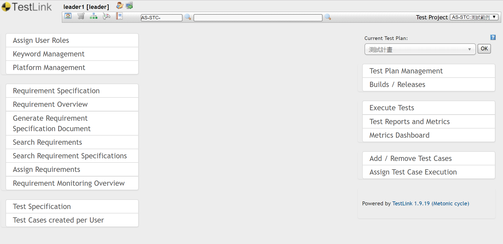專案角色
- Leader：可以新增測試規格和測試需求的所有工作，還可以管理測試計劃、分配測試任務。
- Test designer：可以新增測試案例和測試需求。
- Senior tester：可以檢視和維護測試案例，並且可以執行測試案例，但是不能管理測試計劃、分配測試任務。
- Tester：只能執行測試案例。
- Guest：只有讀的許可權，適合於檢視測試案例和測試需求，以及專案分析的使用者。
- Admin：維護產品，使用者。
開始建置
1. 設定專案角色
Assign User Roles
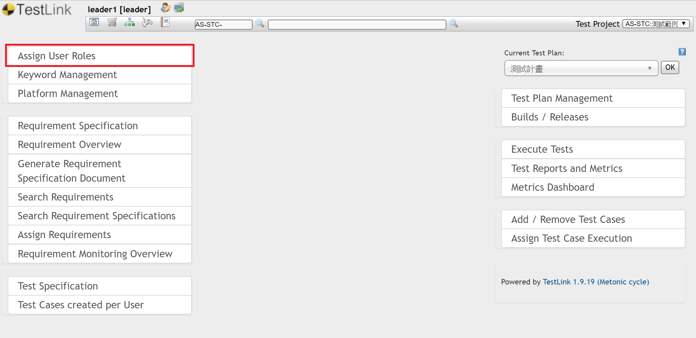2. 建立需求
Requirement Specifications
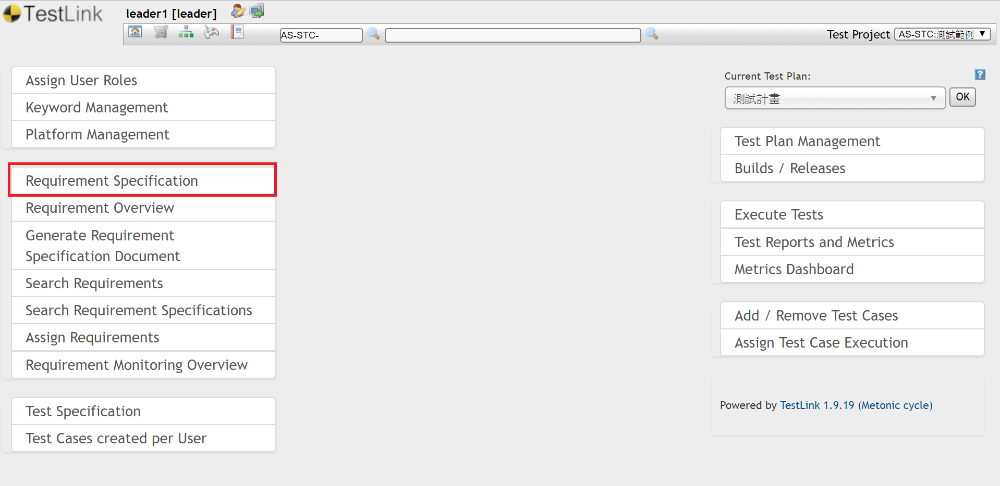先建資料夾，在建需求
Type選擇Feature或System Function
（主要放功能需求）
3. 建立測試計畫
Test Plan Management
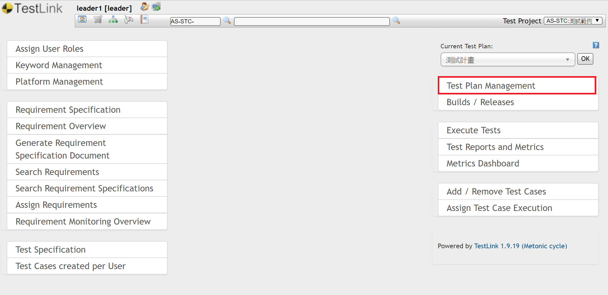輸入軟硬體需求，
Active, Public記得打勾
4. 建立測試案例
Test Specification
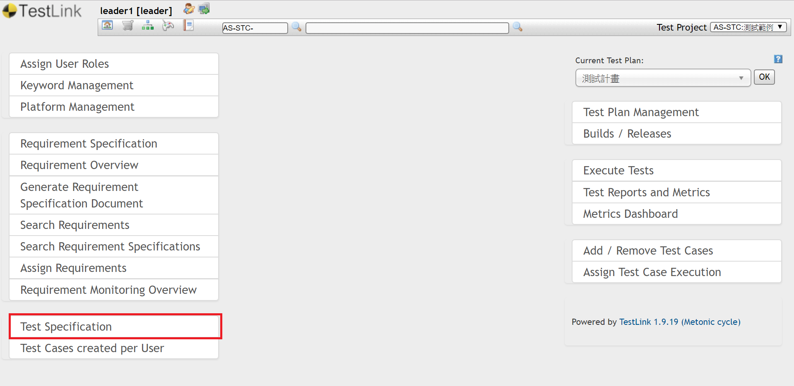先建Test Suit , 再建Test Case
最下面可以設定重要性、執行方法、預計測試時間
建立測試步驟以及對應需求
把測試案例加到測試計畫中
5. 設定Build
Builds / Releases
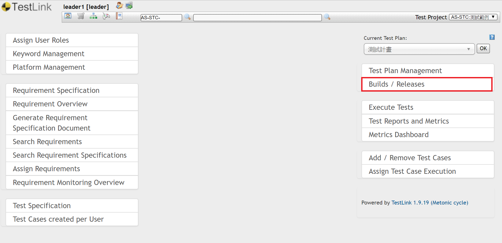一般Build名稱以日期來建，EX：2019/05/01 Build
6. 分配測試工作
Assign Test Case Execution
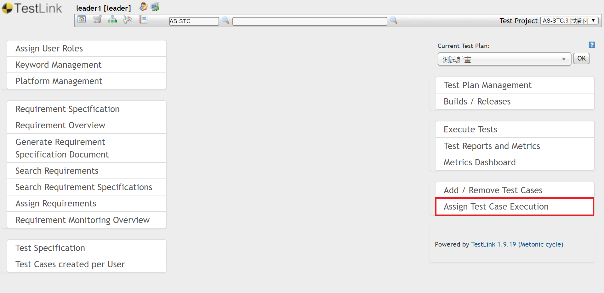分配測試人員
7. 開始測試
Execute Tests
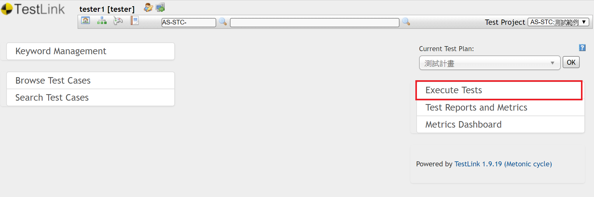測試結果
8. 觀看報告
觀看報告
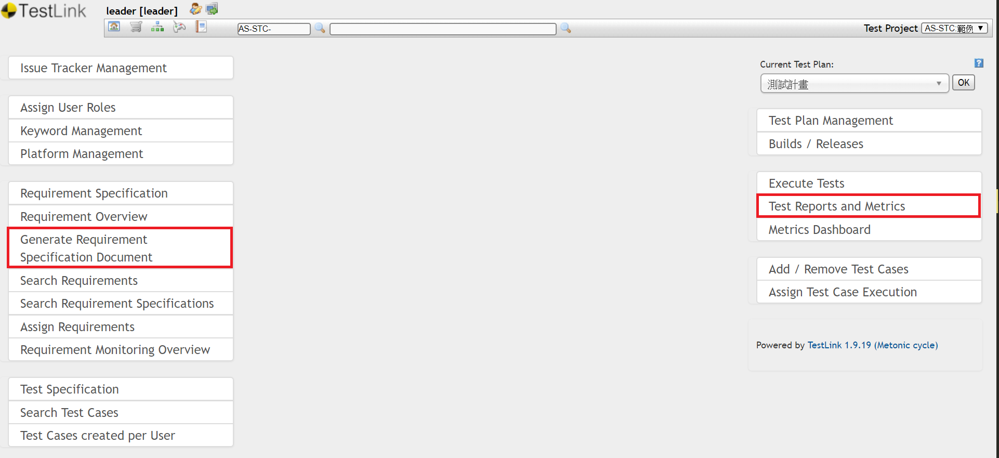輸出測試報告：Test Reports and Metrics
輸出需求報告：Generate Requirement Specification Document
測試報告-1
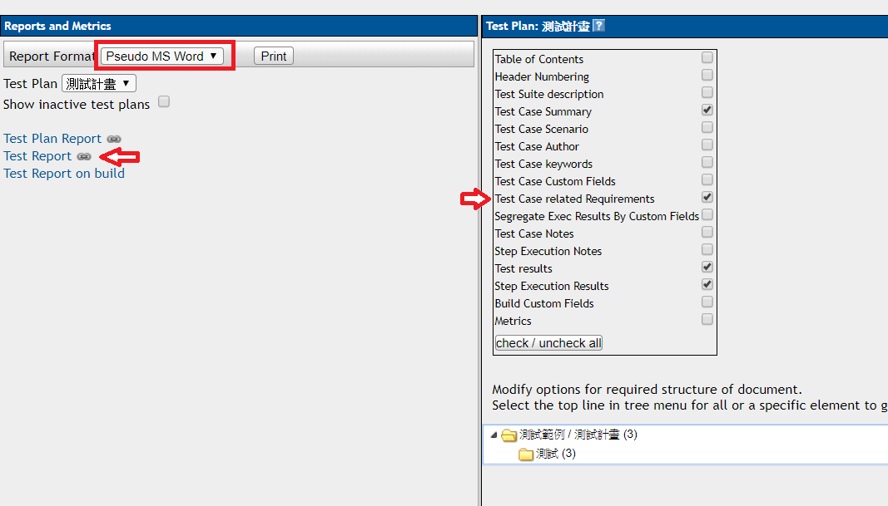Test Case related Requirements打勾
測試報告-2
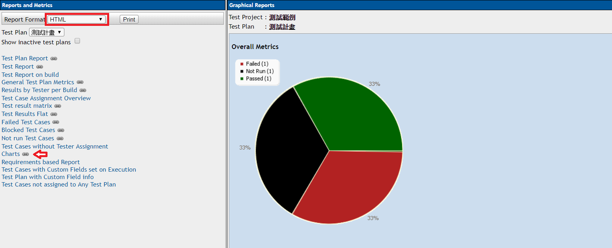複製圓餅圖貼到生成之Word檔
測試報告-3

使用教學
mantis主要功能
→Bugtracker←
回報問題、分配工作、處理問題
1. 管理專案
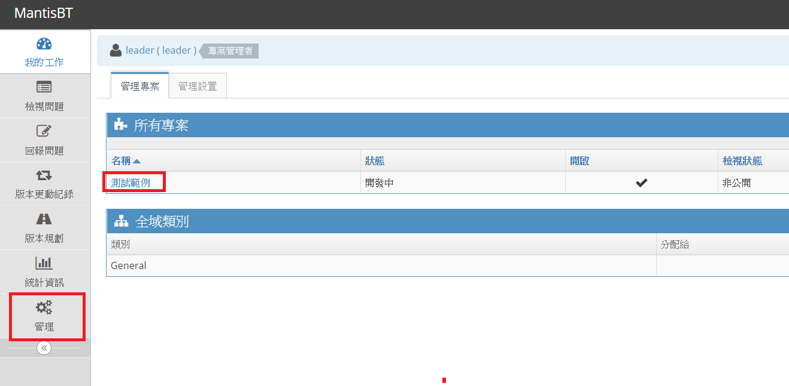2. 新增使用者
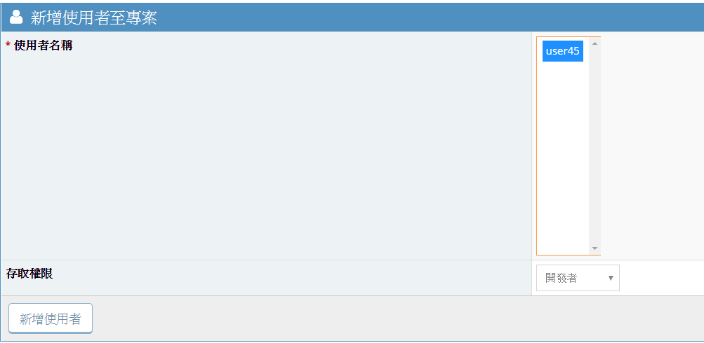存取權限選開發者
3. 回報問題
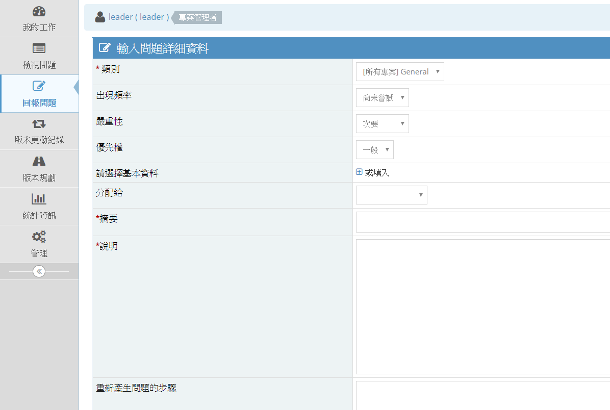說明請填入失敗Test case之編號及相關描述
4. 分配問題之負責人
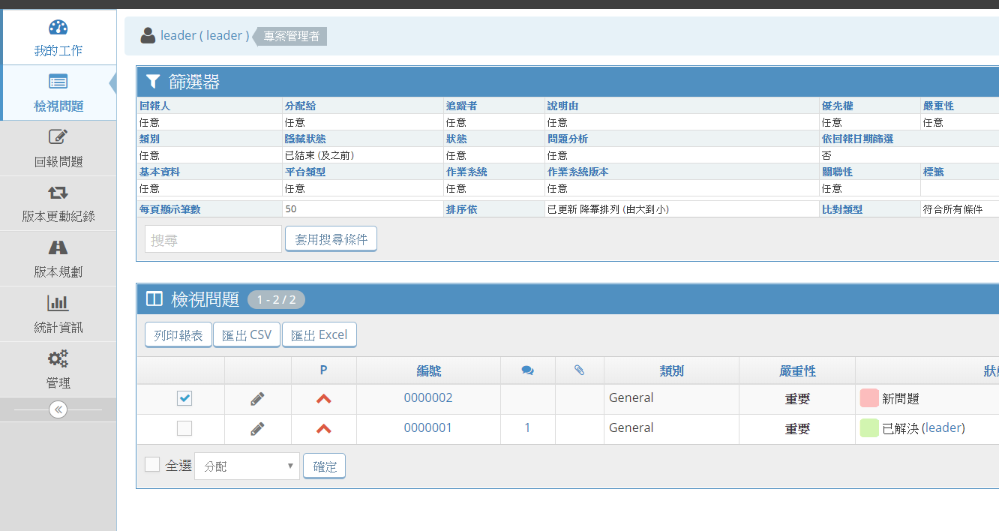5. 處理問題
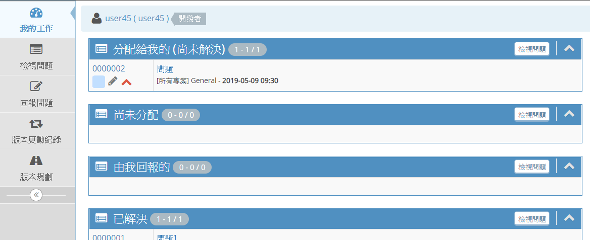更改狀態： 已確認、已解決．．．
testlink + mantis 問題紀錄
Testlink之Test case測試失敗
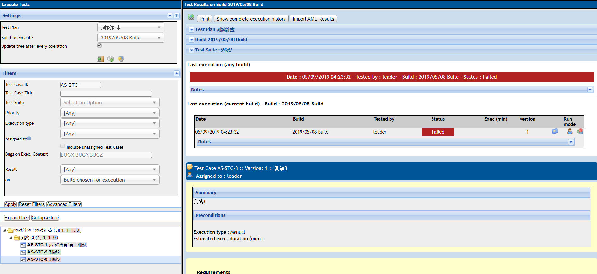到mantis記錄問題
說明請填入失敗Test case之編號及相關描述
Test case紀錄mantis URL
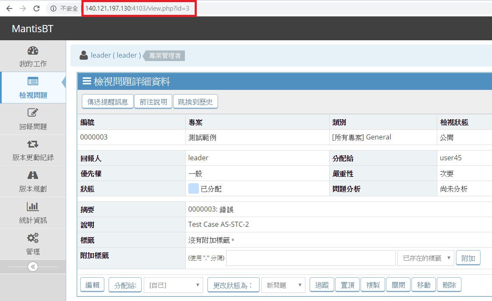Test case紀錄mantis URL
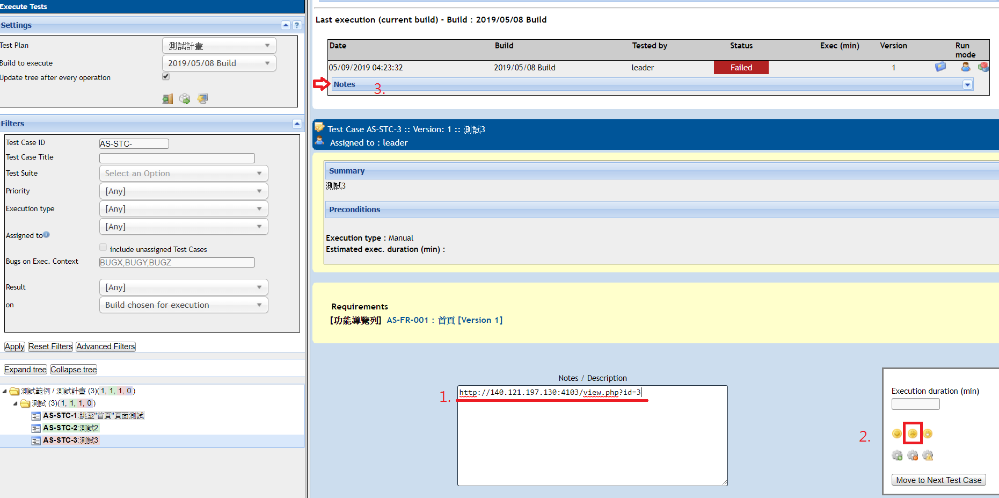申請帳號
Login Name: 學號
First name、Last name: 姓名
E-mail address: 學校信箱
mantis連結
使用者名稱: 學號
電子郵件: 學校信箱
真實姓名: 姓名